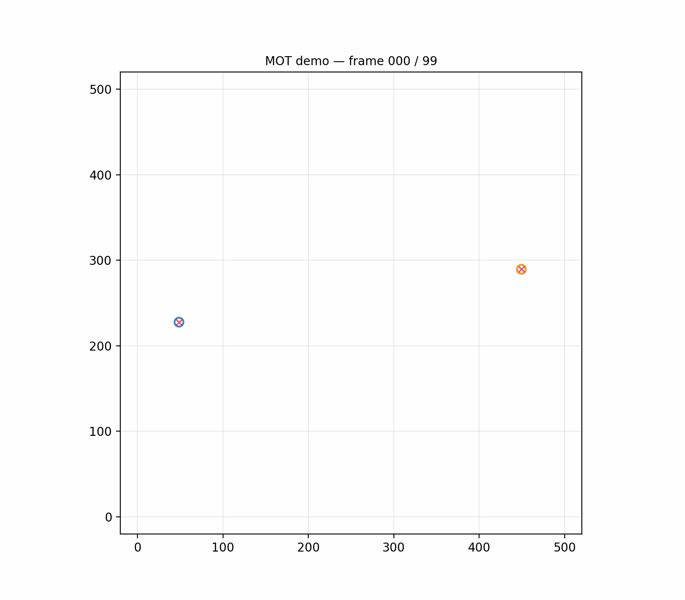

Radar sees distance and direction but generates false signals constantly. Camera sees shape but goes blind behind obstacles. This project builds the math to combine both — keeping a lock on every drone in the airspace, even when they fly directly through each other's path.
The core challenge, explained without jargon.
Radar reports where something might be — but with noise, missed detections, and dozens of phantom signals (called clutter) every second. Camera gives a cleaner picture but goes dark the moment anything blocks its view. Neither sensor alone is reliable enough to stake a tracking decision on.
Instead of trusting one sensor, the system maintains a probability distribution — a best guess of where each drone is, plus a measure of how confident that guess is. Every new sensor reading shifts the distribution. The less noisy the reading, the more it shifts things. This is the Kalman filter idea, dating to Apollo-era navigation.
When two drones fly close together, the system receives signals from both but doesn't know which signal came from which drone. Assign them wrong once and both tracks are corrupted. FusionTrack uses an optimization algorithm (Hungarian method) to find the globally best assignment — not just the closest match — avoiding identity swaps entirely.
Three drones, 100 timesteps, constant clutter. Watch the system track each drone from birth to crossing and back out — never losing identity.

Each timestep, the tracker runs five steps — from prediction through lifecycle management.
Every frame: predict where each drone probably moved based on its last known velocity → check whether each incoming signal is plausibly from a known drone or random noise → match signals to drones optimally (one signal per drone, one drone per signal) → update each drone's estimated position using the matched signal → manage new arrivals and drones that have gone quiet.
Radar reports distance and angle from the sensor. Camera reports pixel coordinates. These are measured in completely different units, with different noise characteristics. The filter converts both into a single best-estimate position — weighting each sensor by how trustworthy it currently is.
Technical: native polar measurement model h(x) = [√(x²+y²), atan2(y,x)] with analytic 2×4 Jacobian. Angle-normalised innovation prevents ±π wraparound. Camera uses a linear H after pixel→world scaling.
Radar generates phantom signals constantly — birds, reflections, electrical noise. Before any matching happens, each incoming signal is tested: is it close enough to a known drone's predicted position, given how uncertain that prediction is? Signals that fail this test are discarded before they can corrupt any tracks.
Technical: Mahalanobis distance² in polar measurement space tested against χ²(2 DOF, 99%) gate before Hungarian assignment. Infeasible pairs receive sentinel cost 10⁹.
When multiple drones are visible simultaneously, each sensor signal must be claimed by exactly one drone. A naïve approach — assign each signal to its nearest drone in sequence — can cascade errors when targets are close. Instead, the system finds the globally optimal assignment: minimize the total cost across all pairings at once.
Technical: scipy.optimize.linear_sum_assignment (Jonker-Volgenant, O(n³)). Order-independent global optimum vs. greedy nearest-neighbour.
A single radar blip shouldn't be enough to declare a drone exists — it's probably clutter. A drone that stops producing signals for several frames probably left the area. The tracker requires two consecutive detections before confirming a track, and deletes it after three missed frames. This keeps the track list clean without human supervision.
Technical: TENTATIVE → CONFIRMED (hits ≥ 2) → DELETED (misses ≥ 3). Stale tentative tracks pruned after 3 frames.
The simpler version converts radar readings to x/y coordinates first, then filters. The advanced version works directly in radar's native units — more accurate at long range where the conversion introduces distortion.
| Variant | Radar handling | Accuracy | Best for |
|---|---|---|---|
KFTracker — linear |
Convert distance/angle → x/y first, then filter | Fixed error budget approx | Short range, quick prototype |
EKFTracker — extended |
Filter directly in distance/angle space; no conversion | Physically derived error model exact | Long range — conversion error grows with distance |
Simulated scenario: 3 drones flying straight-line paths that converge, with radar clutter generated randomly every frame.
When two drones flew within 9 meters of each other — so close each was inside the other's detection zone — the system correctly tracked both without ever swapping their identities. Position estimates stayed within 2.57 meters of true position on average, which matches what you'd expect given the radar's physical noise level at that range.